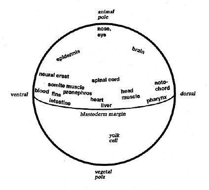

Modified from: Kimmel et al., 1955. Developmental Dynamics 203:253-310. Copyright © 1995 Wiley-Liss, Inc. Reprinted only by permission of Wiley-Liss, a subsidiary of John Wiley & Sons, Inc.
Fig. 14. Fate map of the deep cell layer (DEL) at gastrula onset, at the 50%-epiboly stage before formation of the germ ring and hypoblast. The blastoderm now has the shape of an inverted hemispherical cup overlying the yolk cell (see Figs. 1 and 11B). EVL cells contribute exclusively to the periderm, and no embryonic fates have been rigorously shown to derive from the yolk cell, including its YSL. Hence all known embryonic fates derive from the DEL, and we do not know if there is mapping at this stage according to cell depth within the DEL. Ectodermal fates map nearest the animal pole, mesoderm maps in a broad marginal ring, and endoderm overlaps this ring just at the blastoderm margin. Not all organ rudiments are shown for the sake of clarity; e.g. the hatching gland maps to a dorsal marginal positon overlapping that of the pharynx. Muscle is widespread along the lateral and ventral blastoderm near the margin, and endothelium derives from a still wider mesodermal domain including all longitudes - dorsal, lateral, and ventral. Stomach, pancreas, and swim bladder map laterally, near the liver, and smooth muscle maps near the heart. The median and pectoral fins both map to or near the same ventral location. The basic outline of the map is from Kimmel et al. (1990b); see also Kimmel et al. (1987) for ectodermal fates and changes along the DV axis, and see Stanier et al. (1993) for the heart. R. Warga contributed unpublished fate map locations for all of the endodermal organs, smooth muscle and the fins.

Figure 14